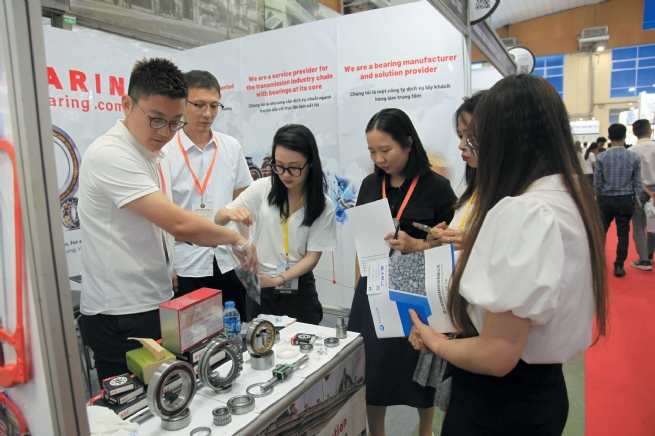

Vinamac Expo 2025: Advancing Technology Transfer, Empowering Supporting Industries
The International Exhibition on Industrial Machinery, Equipment, Technology and Products (Vinamac Expo 2025), taking place in Hanoi from May 14 to 16, brought together 250 domestic and international exhibitors to showcase products, connect with markets and promote investment. The event is increasingly becoming a vital platform for fostering the development of key industries, particularly as Vietnam transitions toward a green and digital economy.
With over 300 booths, this year’s exhibition highlighted cutting-edge technologies and equipment across core sectors such as automation, metalworking, welding and cutting, cast iron and steel, mining and control systems. Particularly, the Common House exhibition area of Ho Chi Minh City drew significant interest for an array of its core industrial products and showcased its clear direction on supporting industrial development and business support policies. This space also functioned as a strategic trade navigation hub for companies to easily access investment and cooperation opportunities.
Besides the exhibition, a series of specialized events were held, including digital transformation and smart industry forums, welding skills competitions, and business networking sessions between Vietnamese and international companies in hardware, hand tools and mining equipment. Field visits to major industrial parks in Hanoi, Bac Ninh, Bac Giang and Hai Duong were also organized, offering both local and foreign businesses deeper insights into opportunities for building factories and developing new industrial projects in Vietnam.
Opportunity to prove internal capabilities and join global supply chain
Speaking at the event, Dr. Bui Van Hanh, Chairman of the Vietnam Welding Society, emphasized the role of Vinamac Expo in enabling Vietnamese businesses to present domestically manufactured equipment that is increasingly competitive against imported products.
The exhibition attracted strong international participation, including more than 180 companies from China showcasing advanced metallurgy, hardware and automation technologies. Mr. He Dongquan, a representative of Boyue Company (China), expressed high regard for the Vietnamese market's potential and came to seek long-term cooperation opportunities through events like Vinamac Expo.
Many Vietnamese companies also saw the event as a chance to assert their capabilities and expand their supply chains. Ms. Truong Thi Viet Hang, representative of Dai Hong Phat Company, said that her company exhibited an array of mechanical shaft transmission products, not only for the domestic market but also for export to Southeast Asian countries. Meanwhile, Mr. Nguyen Viet Toan, Director of ETEC Automation Technology Co., Ltd., noted that the presence of international exhibitors created a healthy competitive environment and motivated Vietnamese companies to invest in quality improvement and deeper integration into global supply chains.
According to the organizers, this year’s event reaffirmed Vinamac Expo’s vital role in connecting markets and strengthening domestic industrial capacity. It also acted as a stepping stone for Vietnam to develop its supporting industries more strongly, a key pillar in the country’s industrialization and modernization process.